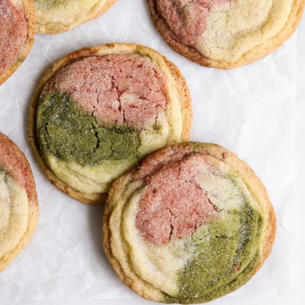

Matcha Strawberry Neapolitan Cookie

Description
Today we are not making ice cream but we are borrowing the three-flavour concept of Neapolitan ice cream.
Vanilla, matcha, and strawberry sugar cookie dough are gently rolled together to create a cookie of three colors and flavors.
Ingredients
- 1 cup unsalted butter, at room temperature
- 1 1/4 cups granulated sugar
- 1 large egg, at room temperature
- 2 tsp vanilla extract
- 2 1/4 cups all-purpose flour
- 1/2 tsp baking powder
- 1/4 tsp baking soda
- 1/2 tsp salt
- 3 tbsp freeze-dried strawberry powder
- 2 tbsp matcha powder
Steps
- Preheat the oven to 350°F (177°C). Line a large baking sheet with parchment paper. Set the baking sheet aside.
- In the bowl of a stand mixer fitted with a paddle attachment, beat together the butter and 11⁄4 cups (250 g) of the sugar on medium speed until they are smooth, about 30 seconds. Add the egg and vanilla and beat to combine.
- In a medium bowl, whisk together the flour, baking powder, baking soda, and salt.
- Add the flour mixture to the butter mixture and mix on low speed until just combined and no more streaks of the flour mixture remain, about 45 seconds.
- Divide the dough into three equal portions. Add strawberry powder to one bowl, matcha powder to the next, while leaving one portion of dough plain.
- Take a tablespoon of each dough and combine the dough by rolling between the palms of your hands.
- Toss the dough balls in a bowl of sugar until dough ball is coated.
- Place the dough balls on the prepared baking sheet, leaving 2 inches between each ball. Bake the cookies for 10 to 13 minutes, until the edges of the cookies are light golden brown. Do not overbake the cookies.
- Remove the cookies from the oven and allow them to cool on the baking sheet for 10 minutes before transferring them to a wire rack to cool completely.
Return to Home Page
Recipe Credits: Constellation Inspiration